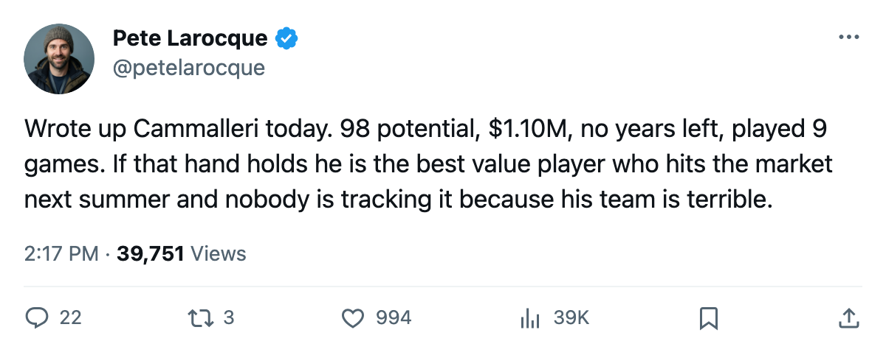

Up 10 on the Index, $1.10M, and 7 Months From the Open Market
Mike Cammalleri scored 60 points last season. His hand just healed. The contract does not renew.
 Pete LarocqueScouting editor · The Prospect File
Pete LarocqueScouting editor · The Prospect File
 Mike Cammalleri87 [52] is up 10 on the Bureau's Development Index. That places him alongside Jason Bacashihua91 and Mike Komisarek87 in the top tier of risers among players under 25. Cammalleri is the only one of those three whose club nobody has called for a piece this month.
Mike Cammalleri87 [52] is up 10 on the Bureau's Development Index. That places him alongside Jason Bacashihua91 and Mike Komisarek87 in the top tier of risers among players under 25. Cammalleri is the only one of those three whose club nobody has called for a piece this month.
He plays for  Los Angeles Kings, which sits 4-11-6 with 18 points, dead last in the Pacific Division. Cammalleri has logged 9 games, 5 points, 22.7 minutes a night. A hand injury kept him out between late October and November 14. Before that, he managed 3 goals and 2 assists in the only stretch where his hand let him skate.
Los Angeles Kings, which sits 4-11-6 with 18 points, dead last in the Pacific Division. Cammalleri has logged 9 games, 5 points, 22.7 minutes a night. A hand injury kept him out between late October and November 14. Before that, he managed 3 goals and 2 assists in the only stretch where his hand let him skate.
Last season he put up 60 points in 61 games at 20.8 minutes a night. The Book's base grade on him is 79. The Index says 10 above that right now. The potential grade the Bureau prints underneath his current overall is 98.
His contract carries $1.10M and zero years remaining. Free agency closes on 2006-07-28. That is 239 days away, and the negotiating window opens well before that.
The contract math nobody is running
A 98 potential with a $1.10M salary and zero years left means whoever signs him in July acquires a player the Bureau believes can reach a 98 overall. The current overall reads 83. The gap between those two numbers is what the next several years of development look like, and someone will pay for it.
The 49th pick of the 2001 draft spent three more college seasons at Michigan after Los Angeles selected him. He came to the Kings as a 21-year-old rookie in 2003-04 and scored 60 points. He is 23 now, with one full NHL season and nine games of a second one on his record.
| Player | Pos | Age | Index | Overall | Potential | Contract | 2003-04 Pts | 2004-05 GP | 2004-05 Pts |
|---|---|---|---|---|---|---|---|---|---|
| Mike Cammalleri [52] | RW | 23 | +10 | 83 | 98 | $1.10M, 0 yr | 60 | 9 | 5 |
| Karel Duba81 [1001035] | RW | 20 | +1 | 77 | 51 | Rookie | — | 23 | 12 |
 Alexander Frolov79 [799] Alexander Frolov79 [799] | LW | 23 | -2 | 75 | 95 | In term | — | 23 | 12 |
| Jared Aulin77 [666] | C | 23 | +2 | 73 | 75 | In term | — | 11 | 3 |
The table above comes from the same query I ran for this piece. Frolov carries a 95 potential and is on a long deal. Cammalleri carries a 98 and is a pending free agent. The Kings' two top-potential forwards have opposite contract timelines.
What the grades say
Cammalleri's strongest attributes on the Book: Agility 95, Speed 95, Shot Power 94, Acceleration 93, Herz 90, Deking 89. Weakest: Fighting 50, Shoot-out Backhand 55, Pass Backhand 60. He is built like a small winger who plays fast and shoots hard. The 50 in Fighting is not a problem. The 55 on the backhand shot is a problem for a player who gets shots from the half-wall.
His morale reads 100. He has 0 penalty minutes in 9 games. The 2003-04 season gave him 15 in 61, so the discipline has improved with the minutes.
The hand and the timeline
The injury sheet puts the onset somewhere between October 29 and November 6. The return date was November 14. He has played 9 games all season, which means the injury cost him roughly 15 to 20 games of what would be a regular shift. At 22.7 minutes a night when he is in the lineup, the Kings use him on the top line when healthy.
The Index is a recent reading. A player who returns from injury and does not play 15 games before the deadline will see it settle. Cammalleri has time, but not much. If he plays well through February, the +10 sticks. If the hand flares again, it drops, and the story becomes about whether the body holds up.
What a trade looks like
LA has 5 picks in 2006. No surplus from other clubs, just the standard allotment. They have Cammalleri, Frolov, and Karel Duba [1001035], who at 20 carries a 77 overall and a 51 potential (the 3rd pick of 2004 whose potential sits below his own overall). Los Angeles is rebuilding around Duba. Cammalleri at $1.10M with 0 years left is the piece that becomes available either by trade before what the calendar has as the trade deadline on 2006-03-19, or by walking in July.
A club looking for a top-six winger with speed, shot, and a potential in the upper 90s will find no cheaper option on the open market this summer. The only comparable is  Pascal Leclaire91 [1202] at +9 on the Index with a 93 potential, but Leclaire is a goaltender on a $3.2M deal with years remaining.
Pascal Leclaire91 [1202] at +9 on the Index with a 93 potential, but Leclaire is a goaltender on a $3.2M deal with years remaining.
Cammalleri played 61 games last year. He can play 61 games this year. The hand needs to hold.
